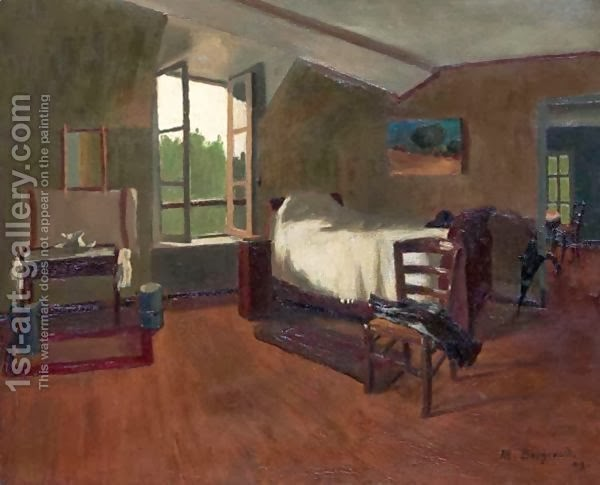

Sukkah 21 - Under the bed in a sukkah
Earlier we said that being under the bed in a sukkah is not considered fulfilling the mitzvah of sukkah, and quoted a precedent for this. But why not? Usually a bed is lower than ten handbreadths, it is not considered as a roof to shield us from the roof of the sukkah and should be nullified! - You are right, this is correct: in the case of a low bed there is no argument, one can sleep under it. However, the teacher was talking about a tall bed.
And yet, Rabbi Yehudah quotes a precedent that goes in the opposite direction. He says, "We were sleeping under the bed in a sukkah in the presence of the Sages, and they did not say anything." Now we need to explain Rabbi Yehudah's point of view. Rabbi Yehudah will say that even though the bed looks like a tent, it is made to lie upon it, not to hide underneath it, and thus it does not qualify as a regular tent with a roof, regardless of geometry. Alternatively, the explanation may be that according to Rabbi Yehudah own's opinion , sukkah has to be a permanent steady dwelling. A bed, which is movable, is only a temporary shelter, so the steady roof of a sukkah is considered proper roof, while the bed is not, and we can ignore it.
Art: The Bedroom by Marius Borgeaud